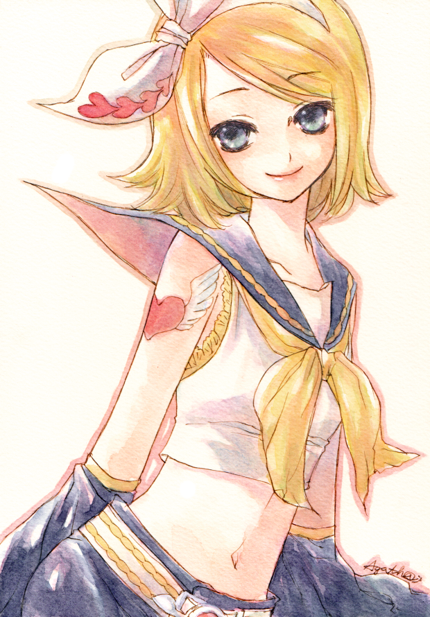

PROFILE
GUMI (グミ) is a Japanese VOCALOID developed and distributed by Internet Co., Ltd. as Megpoid (メグッポイド) which was initially released in June 2009 for the VOCALOID2 engine. There have since been three installments developed for the VOCALOID3 engine: an update of the VOCALOID2 voice bank, additional Japanese voice libraries serving as an expansion pack, and a new bank dedicated to the English language. Her Japanese voicebanks were updated to the VOCALOID4 engine in November 2015, while for the VOCALOID6 engine, she released as a Japanese AI vocal in October 2022, which allowed her to use the "Multilingual" function to sing in English and Mandarin Chinese without the need for recording fully dedicated voicebanks to each language.[1] In July 2024, GUMI received an extension to her AI Megpoid voicebank, AI Megpoid SOLID, also for the VOCALOID6 engine.[2][3] In January 2014, GUMI received a speech voicebank known as Megpoid Talk. She later received a speech voicebank for A.I.VOICE in September 2022.[4] In June 2024, GUMI received an update to her A.I.VOICE voicebank for A.I.VOICE2.[5][6] in December 2023, GUMI received an AI voice database for Synthesizer V Studio, developed by AH-Software Co. Ltd. but distributed by Internet. An update for Synthesizer V Studio 2 has released in September 2025.[7] Her voice is provided by Filipino-Japanese singer and voice actress Megumi Nakajima (中島愛; Nakajima Megumi).
APPEARANCE
The original avatar character of the software was drawn by Masami Yuuki (ゆうきまさみ Yuuki Masami). Her design is often said to be influenced by Ranka Lee's character (one of the first roles done by Megumi Nakajima as a seiyuu). Ranka Lee's main outfit (which she wears for the notable song "Seikan Hikou") contains the colors green, yellow, and orange. This has never been officially confirmed, but is still a popular assumption with both Japanese and overseas VOCALOID fans. Her illustrations from her debut VOCALOID2 software, through her VOCALOID3 releases including: V3 Megpoid, Native, English and up until her VOCALOID4 Megpoid V4 voicebanks had all been illustrated by Masami Yuuki. As of VOCALOID6, a new illustrator, Nou, has taken over the role acting as her official illustrator and has provided illustrations for her AI Megpoid and AI Megpoid SOLID voicebanks. Her belt buckle incorporates the Tenori-on device's design. Concerning GUMI's age, during the V3 Extend development, Noboru once tweeted that there was a rough age preferred for GUMI set around the teenage years. However, no official age was given to GUMI in her designs. When writing about Extend, it was noted the voice could be considered 'extensions' of the age conceptualized for GUMI.[9] Across all designs, GUMI is generally depicted as a young woman with shoulder-length emerald green hair with short choppy bangs, and energetic green eyes. Her fingernails and toenails are painted orange.
Popular Song
Panda Hero
lagu terkenal dengan nuansa emosional dan melodi kuat yang menggambarkan sisi manusia GUMI.
Matryoshka
Kolaborasi unik dengan Hatsune Miku, dikenal karena gaya visual eksentrik dan tempo cepat.
Ah, Its a wonderful cat life
Salah satu lagu paling ikonik dengan sentuhan elektronik dan lirik introspektif.
Artikel Terbaru
Sejarah Vocaloid GUMI
Mengulas perjalanan GUMI sejak versi awal hingga pengembangan karakter terbaru.
READ MOREGallery Visual GUMI di Era Digital
Desain dan evolusi gaya visual GUMI dalam berbagai proyek fanart.
GALLERYPengumuman
Event Virtual Live Paradise GUMI 2025
Bersiaplah untuk konser virtual interaktif GUMI dengan visual 3D terbaru bulan Oktober ini!
CONCERT INFORMATIONPendaftaran Tiket Konser Gumi Cover Song
Fanpage resmi membuka Pembelian Tiker Konser GUMI, Ayo Segera Daftarkan dirimu!
PARTICIPATEVOCALOID MEMBERS
.

KAGAMINE RIN

KAGAMINE LEN

HATSUNE MIKU